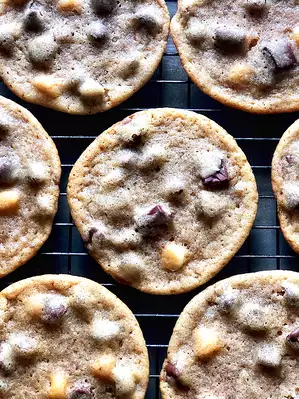

Triple Chocolate Chunk Cookies

Description
Large or small, these triple chocolate cookies are crispy on the outside and chewy on the inside. Refrigerating the batter for 48 hours before baking is ideal, as this allows the dough to fully form its flavor.
Ingredients
- ¾ cup brown sugar
- ½ cup unsalted butter, at room temperature
- ½ cup white sugar
- 1 teaspoon salt
- 1 large egg
- 1 teaspoon vanilla extract
- 1 ½ cups all-purpose flour
- ¾ teaspoon baking soda
- 1 cup milk chocolate chips
- 1 (3 ounce) bar dark chocolate, cut into chunks
- 3 tablespoons white chocolate chips